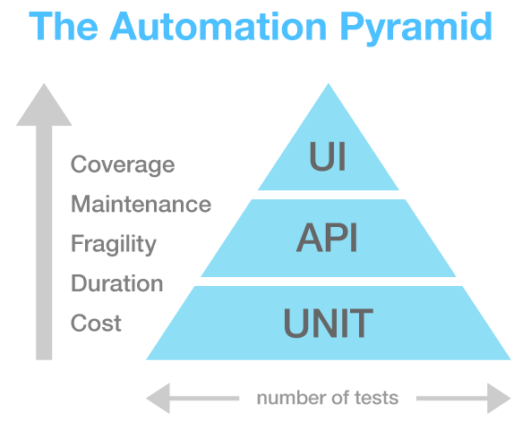

Encontro grupo de tecnologia - SJS
rafael-pestano - DTI - STD - Ramal 4780
Agenda
- Análise estática de código
- Testes automátizados
- Integração contínua
Análise estática de código
“Verificação de um programa sem a execução do mesmo.“
Tipos:
-
Preventiva
-
Exemplo pmd
-
-
Reativa
Testes Automatizados
“Testes automatizados garantem que software irá executar conforme o especificado.“
Vantagens

Vantagens
-
Facilita manutenção/refatoração;
-
Documenta o software;
-
Identifica problemas arquiteturais.
Tipo de teste
Tipo de teste

Testes unitários
Características:
-
Escopo pequeno (facil de descobrir causa de falhas);
-
Feedback rapido (executa em milisegundos);
-
Teste isolado (dependencias são "mocadas").
Exemplo
Dicas
-
Evitar muitas asserções por teste;
-
Nomes de metodos signigficativos;
-
Usar builders/factories.
Testes de Integração
Características:
-
Feedback e escopo mediano;
-
Testa componentes combinados (integração);
-
Geralmente envolve diversas camadas da aplicação(exceto visão) como banco, filesystem, transações, segurança etc...
Exemplos
Dicas
-
Testem em um ambiente o mais próximo possível de produção (Arquillian);
-
Usem banco em memória;
-
preparem o banco com o dbunit;
-
Executem os testes a cada commit (se possível).
Testes funcionais
Características:
-
Testa requisitos funcionais;
- Geralmente se traduz em UI;
- Testa na perspectiva do usuário.
-
Feedback demorado (varios minutos.);
- Cada teste envolve diversos componentes;
- Geralmente todas as camadas da aplicação
-
Difícil encontrar causa de erros
- Por que não abriu a tela?
- O seletor pode estar errado
- Problema na conexão com banco
- Permissão do soe
- Atualização do navegador
- Por fim, pode ser um bug mesmo ;)
Exemplos
Dicas
-
Priorizem o que vão automatizar;
- Partes criticas do sistema ex: inscrição no CHS, novo processo no PROA etc...
-
Usem page objects;
-
Usem o Graphene;
- Seletores jquery;
- Esperas automáticas (waitAjax);
- Gravação do teste (screenshots e video).
-
Usem o webdriver phantomjs na integração continua;
-
Localmente o webdriver do chrome é o mais rápido (no linux é dificil de acompanhar o teste).
Integração Contínua
Objetivos:
-
Integrar e testar a qualidade do código da equipe frequentemente;
-
Falhar o quanto antes (principalmente antes de ir pra produção)

Integração Contínua
Dicas:
-
Commitem poucas alterações e com mais frequencia;
- Mais fácil identificar a causa de falhas.
-
Quando o build falha a equipe deve priorizar a correção
- O quanto antes mais facil corrigir.
- Configurem notificação por email em caso de falha;
- Mapeiem o processo de release em um pipeline de entrega;
- A base do pipeline são os testes;
- Quanto mais estágios mais fácil descobrir a causa de falhas;
- Usem o sonar e verifiquem os erros críticos frequentemente.
Perguntas?
Obrigado!
“Without testing, it becomes religion.“